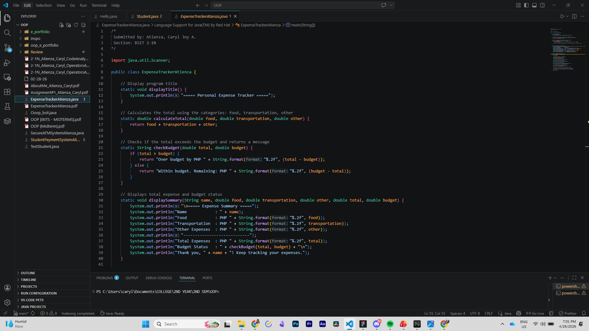
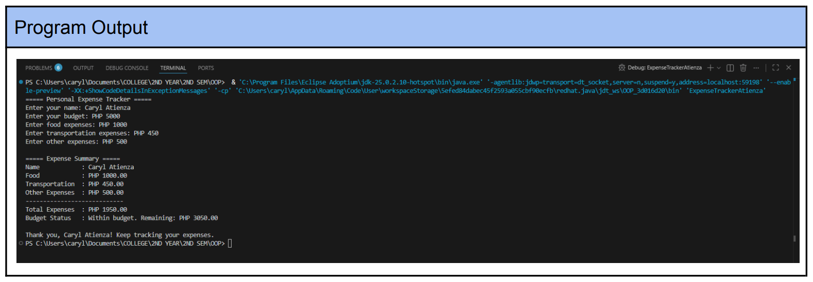

This activity involves creating a modular Java program that utilizes both void and non-void methods to calculate, validate, and display a user's total expenses against a set budget.
Overview
The activity focuses on method implementation, specifically distinguishing between methods that return values (non-void) and those that perform actions without returning data (void). It also covers parameter passing and enhancing program functionality through user input and custom calculations.

Output

Reflection
Moving into modular programming with this expense tracker was a great way to see how breaking down code into specific methods makes the entire logic much easier to manage and debug. Since I'm used to the structured nature of C, creating separate non-void methods for calculations and budget checks felt very intuitive and helped keep the main method clean. I especially enjoyed adding the enhancements, like calculating the remaining budget, as it allowed me to apply the same logic I used in my previous payment system projects while focusing more on proper method naming and return types. Seeing how the void methods could handle the final display while the non-void methods handled the "heavy lifting" of the math really reinforced the importance of clean architecture in Java. It’s a lot more disciplined than just writing one long block of code, and it definitely feels like a more professional way to handle large-scale logic.